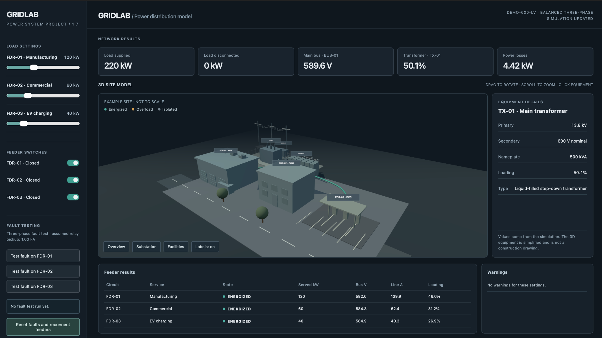
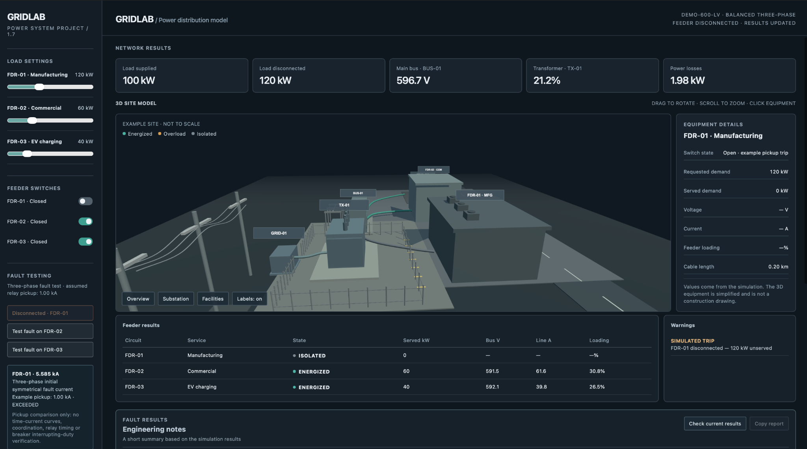
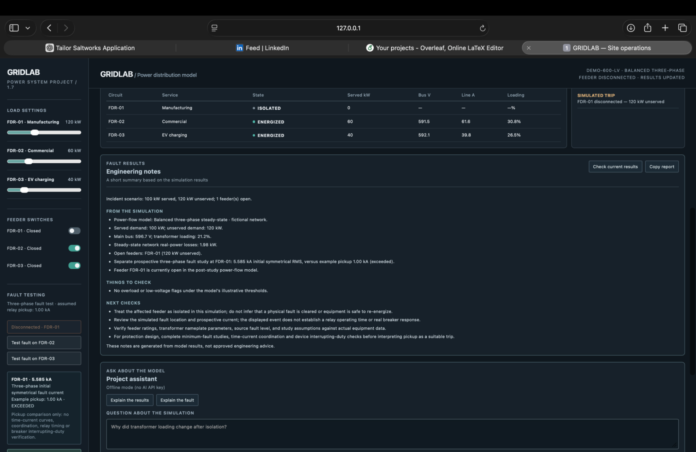

Supply & transformer
Step-down transformer supplying a nominal 600 V low-voltage system.
A Python-based simulation of an industrial electrical distribution system. I developed it to explore load-flow behaviour, feeder control, fault scenarios and automatic isolation through a browser-based monitoring interface.

The simulator models a step-down transformer feeding a nominal 600 V bus with separately controlled manufacturing, commercial and EV-charging loads.
Step-down transformer supplying a nominal 600 V low-voltage system.
Three load branches that can be connected or isolated independently.
Adjustable demand and power-factor inputs to explore changes in operating conditions.
Uses pandapower to calculate electrical quantities, including bus voltage, active and reactive power and feeder loading.
Models three-phase, line-to-line and line-to-ground fault scenarios, with associated trip and feeder-state logic.
Runs simulated system state changes and fault-response logic without requiring constant manual interaction.
A FastAPI backend supports a browser dashboard displaying network state, feeder measurements and events.
Supports manually opening and closing individual simulated feeders to observe network response.
Uses structured validation and automated tests to help keep user inputs and system-state operations consistent.
These images come from the running simulator and show a simulated feeder trip, equipment status and electrical measurements.


Create a transformer, main bus and independent feeder loads for power-flow studies.
Build an API and browser interface for user inputs, network status and measurement readouts.
Implement fault types, trip decisions and automatic isolation behaviour at the application level.
Develop a 12-test pytest suite covering normal operation, feeder isolation, changing demand, fault logic and invalid inputs.
Scope: This is a learning and portfolio simulation, not a commissioned protection relay, real-time hardware testbed or validated short-circuit study. The fault-response behaviour is software logic within the model.
The repository contains the Python backend, browser interface, validation code and tests.